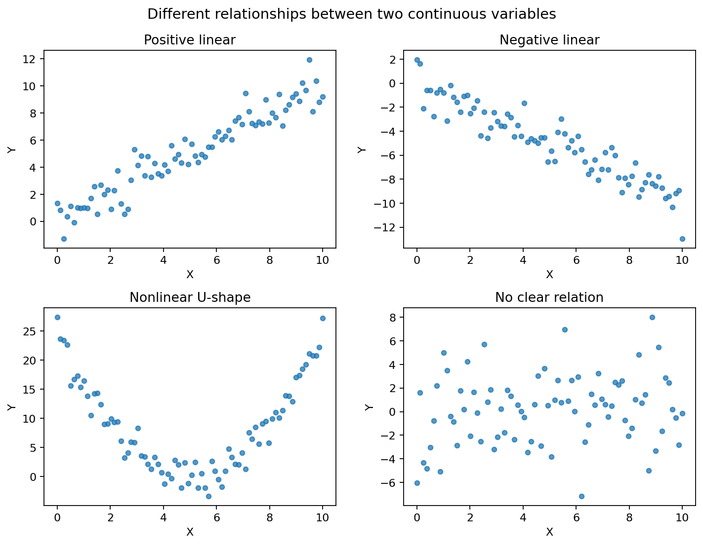
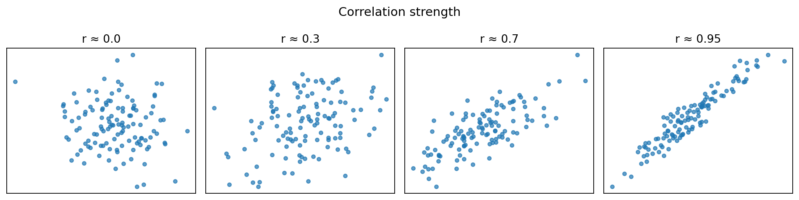
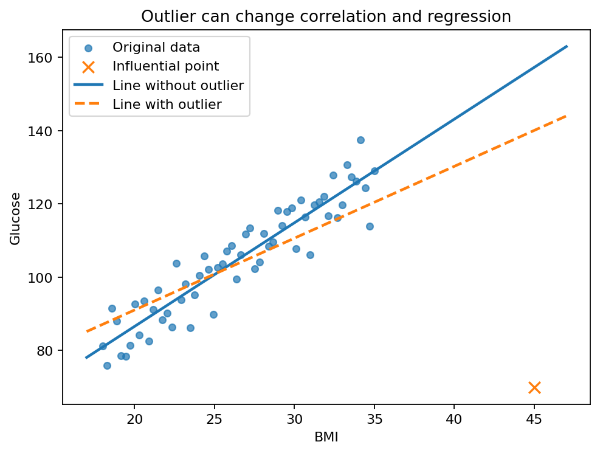
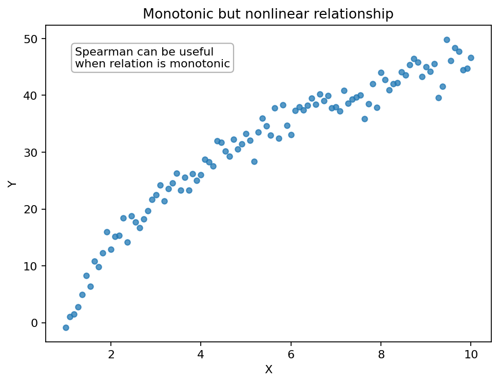
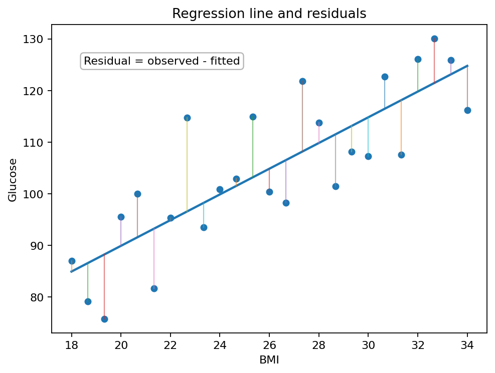
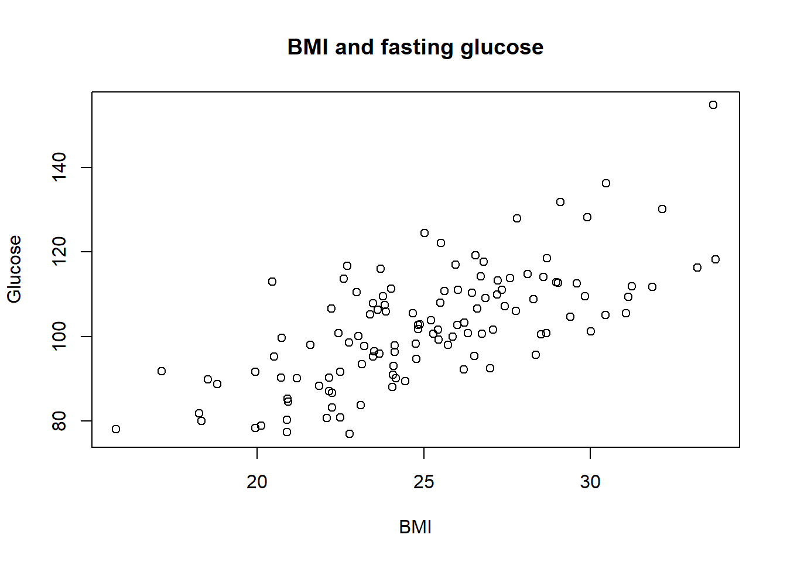

두 연속형 변수 사이의 관계를 분석하는 대표적인 방법으로 상관분석(correlation analysis)과 단순선형회귀(simple linear regression)가 있다. 앞선 장에서 평균 비교, 범주형 자료 분석, 가설검정을 배웠다면, 이번 장부터는 변수가 단순히 “집단”을 나누는 역할을 넘어서 다른 연속형 변수의 변화를 설명하거나 예측하는 역할을 하게 된다.
의학·보건학 연구에서는 다음과 같은 질문이 매우 자주 등장한다.
BMI가 높을수록 공복혈당이 높은가?
나이가 증가할수록 수축기 혈압이 증가하는가?
바이러스 양이 높을수록 간효소 수치가 높은가?
운동 시간이 길수록 체중 감소량이 큰가?
약물 농도가 높을수록 치료 반응 지표가 좋아지는가?
콜레스테롤 수치와 심혈관질환 위험 점수는 관련이 있는가?
이 질문들은 모두 “두 변수 사이에 어떤 관계가 있는가?”라는 공통 구조를 가진다. 하지만 관계를 분석할 때는 단순히 p-value만 확인해서는 안 된다. 먼저 그림으로 자료의 모양을 확인하고, 관계가 선형인지, 이상치가 있는지, 상관분석이 적절한지, 회귀분석으로 해석할 수 있는지 판단해야 한다.

두 연속형 변수 사이에서 나타날 수 있는 관계의 예
이번 장의 핵심 메시지는 다음과 같다.
두 연속형 변수의 관계를 분석할 때는 반드시 산점도를 먼저 확인하고, 상관관계와 인과관계를 구분해야 한다.
11.1 두 연속형 변수의 관계
두 연속형 변수의 관계를 분석할 때 가장 먼저 해야 할 일은 시각화이다. 수치 요약이나 회귀모형을 적용하기 전에 자료가 어떤 모양을 가지고 있는지 확인해야 한다.
예를 들어 BMI와 공복혈당의 관계를 분석한다고 하자. 이때 각 대상자는 하나의 BMI 값과 하나의 혈당 값을 가진다.
대상자
BMI
공복혈당
1
22
90
2
25
100
3
28
115
4
31
126
이 자료에서 BMI를 x축, 공복혈당을 y축에 놓으면 각 대상자는 산점도의 한 점으로 표현된다. 산점도를 통해 다음을 확인할 수 있다.
BMI가 증가할수록 혈당이 증가하는 경향이 있는가?
관계가 직선에 가까운가, 곡선에 가까운가?
관계가 강한가, 약한가?
극단적인 이상치가 있는가?
특정 구간에서만 관계가 나타나는가?
한두 개의 관측치가 전체 결과를 좌우하는가?
이러한 질문에 답하지 않고 바로 상관계수나 p-value를 계산하면 잘못된 결론을 내릴 수 있다.
11.1.1 산점도
산점도(scatter plot)는 두 연속형 변수의 관계를 보는 가장 기본적인 그림이다. 각 관측치를 하나의 점으로 표시하며, x축에는 설명변수 또는 관심 변수, y축에는 결과변수를 놓는 경우가 많다.
산점도를 볼 때는 다음 네 가지를 확인한다.
확인 항목
질문
예
방향
한 변수가 증가할 때 다른 변수는 증가하는가, 감소하는가?
BMI 증가와 혈당 증가
강도
점들이 직선 주변에 얼마나 밀집되어 있는가?
강한 상관 vs 약한 상관
형태
관계가 선형인가, 비선형인가?
직선형, U자형, 포화형
이상치
전체 패턴에서 크게 벗어난 점이 있는가?
입력 오류, 특이 환자
산점도는 특히 Pearson 상관계수를 계산하기 전 반드시 확인해야 한다. Pearson 상관계수는 선형 관계를 요약하는 지표이므로, 자료가 비선형 관계를 가진다면 상관계수만으로는 관계를 제대로 설명하지 못할 수 있다.
11.2 상관분석이란?
상관분석은 두 변수 사이의 관련성의 방향(direction)과 강도(strength)를 하나의 숫자로 요약하는 방법이다.
가장 널리 사용되는 지표는 Pearson 상관계수(Pearson correlation coefficient)이다. Pearson 상관계수는 보통 \(r\)로 표시하며, 값의 범위는 다음과 같다.
\[-1 \leq r \leq 1\]
상관계수의 부호는 관계의 방향을 나타내고, 절댓값은 선형 관계의 강도를 나타낸다.
상관계수
의미
\(r > 0\)
양의 상관. 한 변수가 증가할수록 다른 변수도 증가하는 경향
\(r < 0\)
음의 상관. 한 변수가 증가할수록 다른 변수는 감소하는 경향
\(r = 0\)
선형 상관이 없음
\(r = 1\)
완전한 양의 선형 관계
\(r = -1\)
완전한 음의 선형 관계

상관계수의 크기에 따른 점들의 퍼짐
상관계수가 0이라는 것은 선형 관계가 없다는 뜻이지, 두 변수 사이에 어떤 관계도 없다는 뜻은 아니다. 예를 들어 U자형 관계에서는 Pearson 상관계수가 0에 가까울 수 있지만, 두 변수 사이에는 분명한 비선형 관계가 존재할 수 있다.
Pearson 상관계수는 두 변수가 각각의 평균으로부터 함께 위아래로 움직이는 정도를 표준화한 값이다.
예를 들어 BMI가 평균보다 높은 대상자에서 혈당도 평균보다 높은 경향이 있고, BMI가 평균보다 낮은 대상자에서 혈당도 평균보다 낮은 경향이 있다면 \(r\)은 양수가 된다. 반대로 한 변수는 평균보다 높을 때 다른 변수는 평균보다 낮은 경향이 있다면 \(r\)은 음수가 된다.
귀무가설 \(H_0: \rho=0\)이 참이라고 가정하면, 다음 검정통계량은 자유도 \(n-2\)인 t분포를 따른다.
\[t
=
\frac{r\sqrt{n-2}}{\sqrt{1-r^2}}\]
이 식은 표본 상관계수 \(r\)이 0에서 얼마나 멀리 떨어져 있는지, 그리고 표본 크기 \(n\)이 얼마나 큰지를 함께 반영한다. 같은 \(r\)이라도 표본 크기가 커지면 t값이 커지고 p-value는 작아질 수 있다.
따라서 상관분석 결과를 보고할 때는 p-value만 제시하지 말고 상관계수와 95% 신뢰구간을 함께 제시하는 것이 바람직하다.
11.2.6 상관분석에서 주의할 점
상관분석은 간단하고 유용하지만, 다음 한계를 반드시 이해해야 한다.
11.2.6.1 상관관계는 인과관계가 아니다
상관관계가 있다는 것은 두 변수가 함께 변한다는 뜻이지, 한 변수가 다른 변수를 원인적으로 변화시킨다는 뜻이 아니다.
예를 들어 아이스크림 판매량과 익사 사고 수는 여름철에 함께 증가할 수 있다. 하지만 아이스크림이 익사 사고를 일으킨다고 해석해서는 안 된다. 두 변수 모두 기온이라는 제3의 변수와 관련되어 있기 때문이다.
의학 연구에서도 마찬가지이다. BMI와 혈당이 관련되어 있다고 해서 BMI만이 혈당을 직접 증가시킨다고 단정할 수 없다. 나이, 식습관, 운동량, 약물 복용, 유전적 요인 등 여러 교란변수가 있을 수 있다.
11.2.6.2 비선형 관계를 놓칠 수 있다
Pearson 상관계수는 선형 관계를 요약한다. 따라서 비선형 관계가 있으면 상관계수가 작게 나올 수 있다.
예를 들어 어떤 약물의 용량과 효과가 낮은 용량에서는 증가하다가 일정 용량 이후 포화되는 관계를 보인다면, 단순한 Pearson 상관계수는 관계를 충분히 설명하지 못할 수 있다.
11.2.6.3 이상치에 민감하다
상관계수와 단순선형회귀는 이상치에 민감하다. 특히 x축 방향으로 멀리 떨어진 점이 y값도 특이하면 전체 상관계수와 회귀기울기를 크게 바꿀 수 있다.

이상치가 상관계수와 회귀선에 미치는 영향
따라서 상관분석을 하기 전에는 반드시 산점도를 확인하고, 이상치가 단순 입력 오류인지, 실제 특이 사례인지, 분석에서 어떻게 다룰 것인지 판단해야 한다.
11.2.7 Spearman 상관계수
Spearman 상관계수는 실제 값이 아니라 순위(rank)를 이용해 계산하는 상관계수이다. 보통 \(\rho_s\) 또는 \(r_s\)로 표시한다.
Spearman 상관계수는 다음 상황에서 유용하다.
변수 분포가 심하게 치우친 경우
이상치가 많은 경우
관계가 선형은 아니지만 단조 증가 또는 단조 감소인 경우
순서형 변수 간의 관련성을 보고 싶은 경우
작은 표본에서 Pearson 상관계수가 이상치에 지나치게 영향을 받는 경우

단조 증가하지만 비선형인 관계: Spearman 상관계수가 유용할 수 있다
단조 관계(monotonic relationship)는 한 변수가 증가할 때 다른 변수가 대체로 증가하거나 대체로 감소하는 관계를 의미한다. 반드시 직선일 필요는 없다.
11.2.8 Pearson과 Spearman 비교
구분
Pearson 상관계수
Spearman 상관계수
사용하는 값
실제 관측값
순위
주로 측정하는 관계
선형 관계
단조 관계
이상치 영향
큼
상대적으로 작음
적합한 변수
연속형, 대체로 선형 관계
순서형, 치우친 자료, 단조 비선형 관계
해석
단위 없는 선형 관련성
단위 없는 순위 관련성
Pearson과 Spearman 중 무엇을 사용할지는 단순히 정규성 검정 결과만으로 결정하지 않는다. 먼저 산점도를 보고, 연구 질문이 “실제 값의 선형 관계”인지 “순위의 단조 관계”인지 판단해야 한다.
11.2.9 상관분석 결과 보고 예시
상관분석 결과는 다음과 같이 보고할 수 있다.
BMI와 공복혈당 사이에는 양의 선형 상관이 관찰되었다. Pearson 상관계수는 \(r=0.62\)였고, 95% 신뢰구간은 0.48에서 0.73이었으며, p-value는 0.001 미만이었다.
Spearman 상관분석의 경우 다음과 같이 쓸 수 있다.
CRP와 IL-6 사이에는 양의 단조 상관이 관찰되었다. Spearman 상관계수는 \(r_s=0.55\)였고, p-value는 0.003이었다.
보고할 때는 가능한 한 다음 정보를 함께 제시한다.
사용한 상관계수의 종류
상관계수 값
95% 신뢰구간
p-value
산점도 또는 자료의 분포 특징
11.3 단순선형회귀란?
단순선형회귀(simple linear regression)는 하나의 설명변수 \(X\)를 이용하여 하나의 연속형 결과변수 \(Y\)의 평균적인 변화를 설명하거나 예측하는 방법이다.
예를 들어 BMI와 공복혈당의 관계를 분석한다고 하자.
설명변수 \(X\): BMI
결과변수 \(Y\): 공복혈당
단순선형회귀는 다음 질문에 답한다.
BMI가 1 증가할 때 공복혈당은 평균적으로 얼마나 변하는가?
상관분석은 두 변수의 관련성의 강도와 방향을 요약하지만, 회귀분석은 설명변수와 결과변수를 구분하고 변화량을 추정한다.
11.3.1 단순선형회귀모형
단순선형회귀모형은 다음과 같다.
\[Y_i
=
\beta_0
+
\beta_1 X_i
+
\epsilon_i\]
여기서 각 기호의 의미는 다음과 같다.
기호
의미
\(Y_i\)
\(i\)번째 대상자의 결과변수
\(X_i\)
\(i\)번째 대상자의 설명변수
\(\beta_0\)
절편, \(X=0\)일 때 평균적인 \(Y\) 값
\(\beta_1\)
기울기, \(X\)가 1 증가할 때 평균적인 \(Y\) 변화량
\(\epsilon_i\)
오차항, 회귀선으로 설명되지 않는 개인별 차이
회귀모형에서 중요한 것은 \(Y_i\)를 완벽하게 맞히는 것이 아니라, \(X_i\)가 주어졌을 때 \(Y_i\)의 평균적인 경향을 설명하는 것이다.
조건부 평균의 관점에서 쓰면 다음과 같다.
\[E(Y|X=x)
=
\beta_0
+
\beta_1 x\]
즉 단순선형회귀는 \(X=x\)인 사람들의 평균적인 \(Y\)가 직선 형태로 변한다고 가정한다.
11.3.2 절편과 기울기 해석
11.3.2.1 절편
절편 \(\beta_0\)는 \(X=0\)일 때의 평균적인 \(Y\) 값이다.
하지만 의학 연구에서는 \(X=0\)이 현실적으로 의미가 없는 경우가 많다.
예를 들어 BMI를 설명변수로 사용한다면 BMI=0은 현실적으로 불가능하다. 나이를 설명변수로 사용할 때도 성인 대상 연구에서 나이=0은 연구 범위 밖의 값이다. 따라서 절편은 모형을 구성하기 위해 필요한 수학적 값이지만, 항상 임상적으로 의미 있게 해석되는 것은 아니다.
절편 해석이 부자연스러운 경우에는 설명변수를 중심화할 수 있다. 예를 들어 BMI에서 25를 뺀 변수를 사용하면,
\[BMI_c = BMI - 25\]
모형은 다음과 같이 된다.
\[Y_i = \beta_0 + \beta_1 BMI_{ci} + \epsilon_i\]
이때 절편 \(\beta_0\)는 BMI가 25인 사람의 평균적인 \(Y\) 값이 된다. 따라서 해석이 더 자연스러워질 수 있다.
11.3.2.2 기울기
기울기 \(\beta_1\)은 설명변수 \(X\)가 1 단위 증가할 때 결과변수 \(Y\)가 평균적으로 얼마나 변하는지를 나타낸다.
예를 들어 다음 회귀식이 있다고 하자.
\[\widehat{Glucose}
=
45
+
2.3 \times BMI\]
이때 기울기는 2.3이다. 해석은 다음과 같다.
BMI가 1 증가할 때 공복혈당은 평균적으로 2.3 mg/dL 증가한다.
BMI가 25인 사람의 예측 혈당은 다음과 같다.
\[45 + 2.3 \times 25 = 102.5\]
따라서 예측 혈당은 102.5 mg/dL이다.
11.3.3 회귀선과 잔차
회귀선은 설명변수 \(X\)에 따른 결과변수 \(Y\)의 평균적인 값을 나타낸다. 실제 자료에서는 각 관측값이 회귀선 위에 정확히 놓이지 않는다. 관측값과 회귀선 사이의 차이를 잔차(residual)라고 한다.
예측값은 다음과 같다.
\[\hat{Y}_i
=
\hat{\beta}_0
+
\hat{\beta}_1 X_i\]
잔차는 다음과 같다.
\[e_i
=
Y_i
-
\hat{Y}_i\]
잔차가 양수이면 실제 관측값이 회귀선보다 위에 있다는 뜻이고, 잔차가 음수이면 실제 관측값이 회귀선보다 아래에 있다는 뜻이다.

회귀선과 잔차
잔차는 회귀분석에서 매우 중요하다. 회귀모형이 적절하다면 잔차는 특정한 패턴 없이 0을 중심으로 흩어져 있어야 한다.
11.3.4 최소제곱법
회귀선은 여러 직선 중에서 관측값과 예측값의 차이가 가장 작아지도록 선택된다. 가장 널리 사용되는 방법이 최소제곱법(ordinary least squares, OLS)이다.
최소제곱법은 잔차제곱합(residual sum of squares, RSS)을 최소화한다.
bmi glucose
Min. :15.76 Min. : 76.85
1st Qu.:22.67 1st Qu.: 92.38
Median :24.82 Median :101.70
Mean :25.06 Mean :102.38
3rd Qu.:27.25 3rd Qu.:111.00
Max. :33.75 Max. :154.86
11.4.1 R 실습: 산점도
plot( data$bmi, data$glucose,main ="BMI and fasting glucose",xlab ="BMI",ylab ="Glucose")

회귀선을 함께 추가하면 선형 관계를 더 쉽게 확인할 수 있다.
plot( data$bmi, data$glucose,main ="BMI and fasting glucose with regression line",xlab ="BMI",ylab ="Glucose")abline(lm(glucose ~ bmi, data = data), lwd =2)
Spearman's rank correlation rho
data: data$bmi and data$glucose
S = 90560, p-value < 2.2e-16
alternative hypothesis: true rho is not equal to 0
sample estimates:
rho
0.6855337
Pearson과 Spearman 결과가 크게 다르면 산점도를 다시 확인해야 한다. 이상치, 비선형 관계, 순위 기반 관계가 있을 수 있다.
11.4.4 R 실습: 단순선형회귀
단순선형회귀는 lm() 함수로 적합한다.
model <-lm(glucose ~ bmi, data = data)summary(model)
Call:
lm(formula = glucose ~ bmi, data = data)
Residuals:
Min 1Q Median 3Q Max
-19.453 -6.941 -1.767 5.567 29.591
Coefficients:
Estimate Std. Error t value Pr(>|t|)
(Intercept) 35.7740 6.3517 5.632 1.23e-07 ***
bmi 2.6577 0.2509 10.592 < 2e-16 ***
---
Signif. codes: 0 '***' 0.001 '**' 0.01 '*' 0.05 '.' 0.1 ' ' 1
Residual standard error: 9.793 on 118 degrees of freedom
Multiple R-squared: 0.4874, Adjusted R-squared: 0.483
F-statistic: 112.2 on 1 and 118 DF, p-value: < 2.2e-16